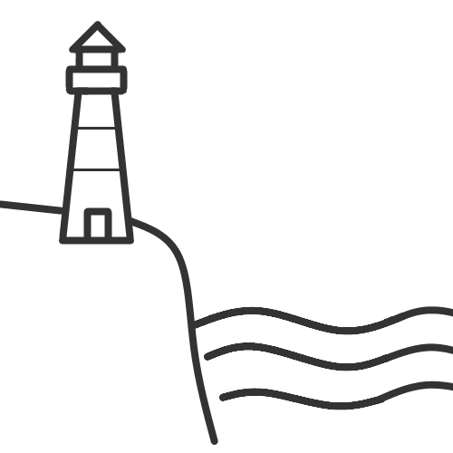
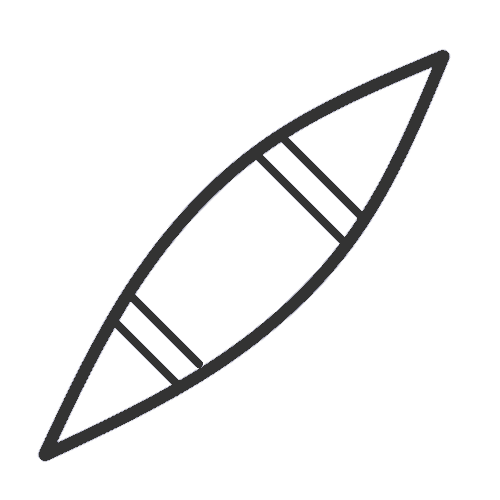

Longships Lighthouse and Land's End
Paddling off the most westerly point of the British mainland, out to Longships Lighthouse for some rock hopping and a spot of seal watching, returning around Land’s End itself.
Weather forcast for this route
About this route
| Country |
United Kingdom
|
| Paddling Environment |

Coastal
|
| Distance to Paddle |
14km |
| Route Type |
Round Trip
|
| Paddling Time |
- Kayak: 3.5 - 4 hours
-  Canoe: 3.5 - 4 hours
 SUP: 2.5 - 3 hours SUP: 2.5 - 3 hours
|
Hazards on this route
| Weather |
- Significant waves and wind can be experienced, as the area is completely exposed to the Atlantic Ocean to the west
- Water temperatures are often low. Dry suits should be considered for most of the year
|
| Environment |
- Very few landing sites are available along the coast; this is a committed journey
- Tide races can be found between Longships Lighthouse and the mainland
- Numerous submerged rocks are present around Longships Lighthouse and the coast of the mainland
|
| Traffic |
- A few fishing boats may be encountered around the harbour at Sennen
|
| Wildlife |
- Seals are common in the area. Paddler should avoid disturbing and stay well clear of the seals
|